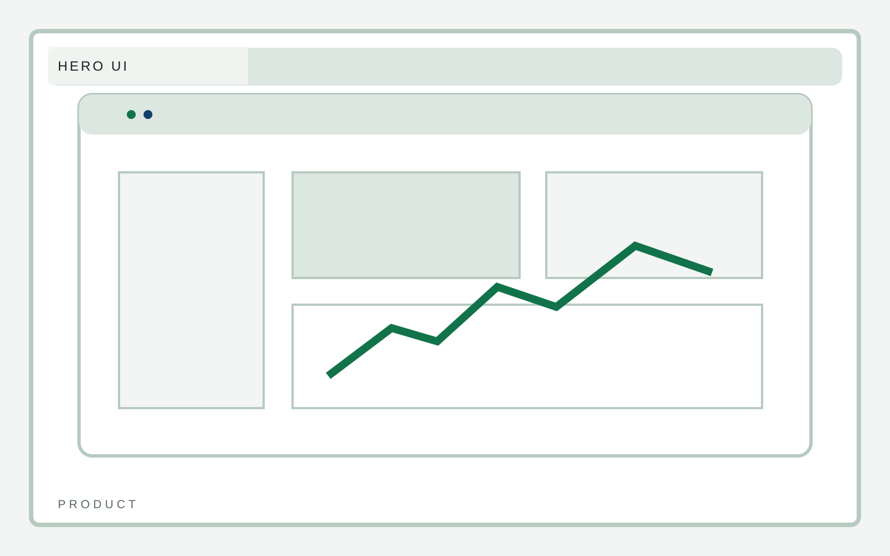
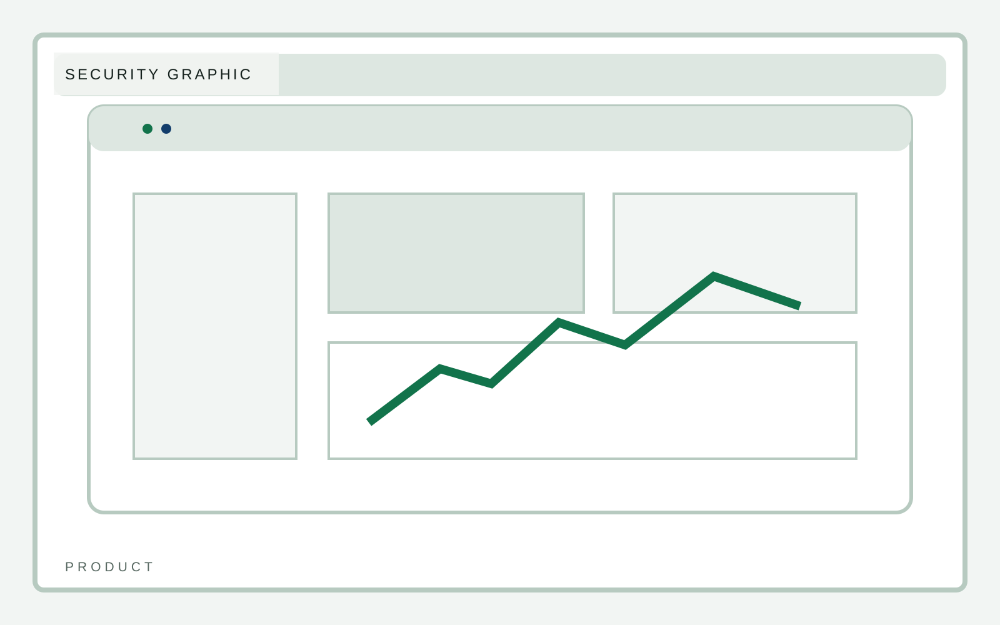
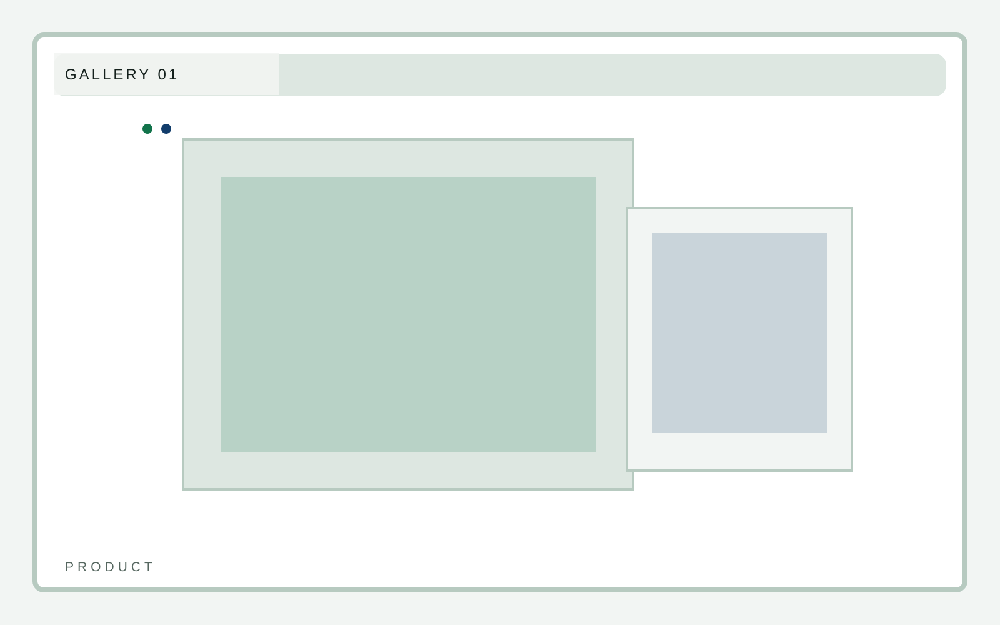
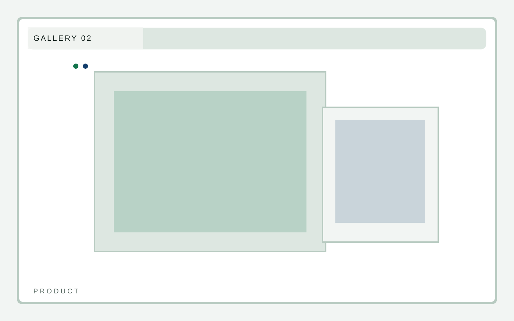
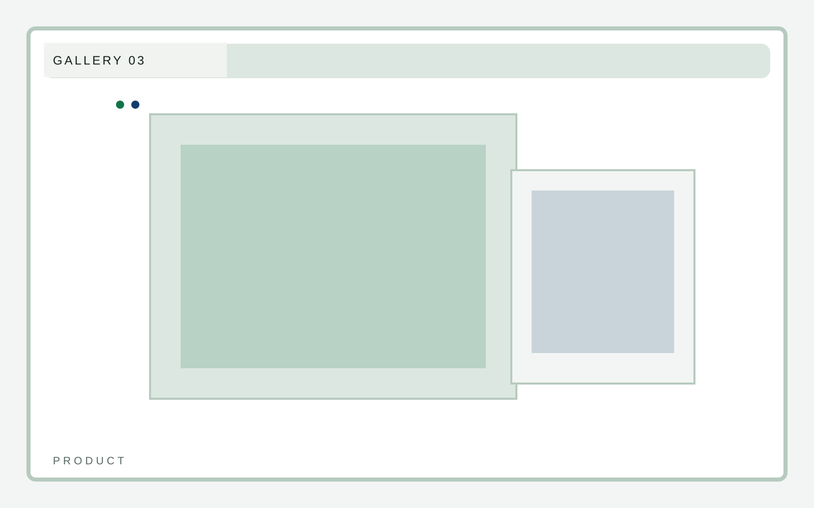

Activation
Fast team rollout
B2B software
A software marketing template that puts product UI, workflow clarity, and proof structure ahead of the usual startup chrome. Feature depth must stay tied to workflow clarity.

B2B software
Deep-dive content should show how the interface behaves and why that behavior matters. Feature names alone are not enough.
B2B software
Integrations should be organized like part of the product system rather than as logo wallpaper.
B2B software
Security needs to read as product rigor and governance clarity, not as fear-based copy.

B2B software
The UI gallery should help the reader build a mental model of the product without becoming repetitive.


